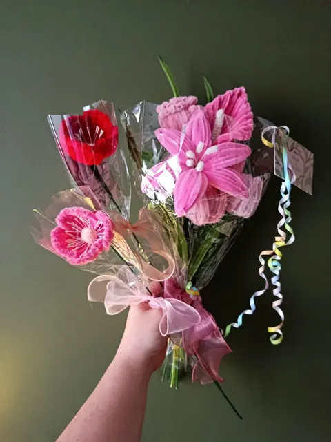
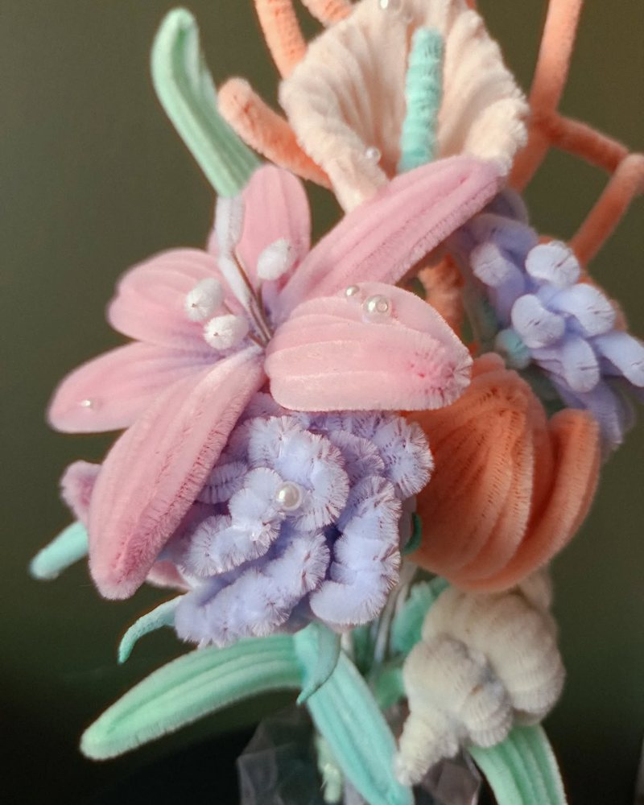

Conseils & savoir-faire
Idées de messages pour la carte
Chaque création Flore & Chenilles est accompagnée d’une carte de vœux offerte. Vous ne savez pas quoi écrire ? Voici des idées, à reprendre telles quelles ou à adapter.
En images


Pour un anniversaire
- Joyeux anniversaire ! Des fleurs qui ne fanent pas, pour une année qui ne finit pas de te sourire.
- Une année de plus, et toujours autant de douceur.
- Que cette nouvelle année soit aussi belle que ce bouquet.
- Joyeux anniversaire, avec toute mon affection.
- Pour souffler tes bougies en beauté.
Pour dire merci
- Merci pour tout !
- Merci pour votre gentillesse et votre patience.
- Un immense merci, du fond du cœur.
- Pour vous remercier d’avoir été là.
- Merci, tout simplement.
Pour la maîtresse ou l’ATSEM
- Merci pour cette belle année !
- Merci maîtresse, je ne vous oublierai pas.
- Pour la meilleure ATSEM du monde.
- Merci de m’avoir appris tant de choses.
- Bonnes vacances, et merci pour tout !
Pour une naissance
- Bienvenue, petit cœur !
- Bienvenue dans la vie, petite merveille.
- Félicitations aux heureux parents !
- Un bébé, des fleurs, beaucoup d’amour.
- Que la vie te soit douce.

Pour la personne que vous aimez
- Pour toi, pour toujours.
- Mon amour pour toi ne fanera jamais.
- Une fleur pour chaque raison de t’aimer.
- À toi, qui embellis chacun de mes jours.
- Juste parce que je t’aime.
Pour la fête des mères et des grands-mères
- Bonne fête, maman !
- À la plus douce des mamans.
- Bonne fête, mamie chérie !
- Pour toi qui penses toujours à nous.
- Merci d’être toi.
En souvenir
- Toujours dans nos cœurs.
- Tu nous manques.
- Avec tout notre amour, pour toujours.
- Pensées affectueuses.
- Que ces fleurs veillent sur toi.
Juste parce que
- Juste parce que.
- Pour illuminer ta journée.
- Une petite douceur, rien que pour toi.
- Parce que tu le vaux bien.
- Pense à moi en les regardant.
Quelques créations
Les autres conseils
Les fleurs de l’atelier
- Rose en fil chenille
- Tulipe en fil chenille
- Lys en fil chenille
- Gerbera en fil chenille
- Pavot et coquelicot en fil chenille
- Arum en fil chenille
- Hortensia en fil chenille
- Tournesol en fil chenille
- Muguet en fil chenille
- Lavande en fil chenille
- Jonquille en fil chenille
- Marguerite en fil chenille
- Pensée en fil chenille